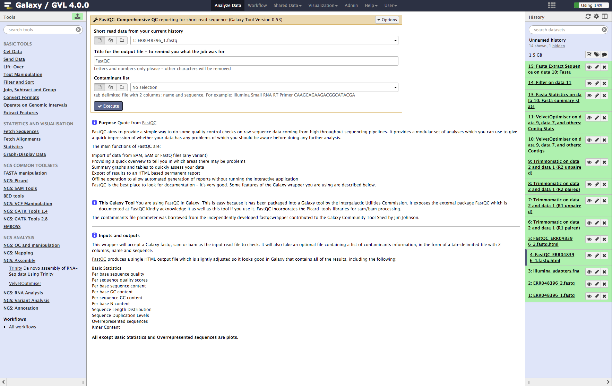
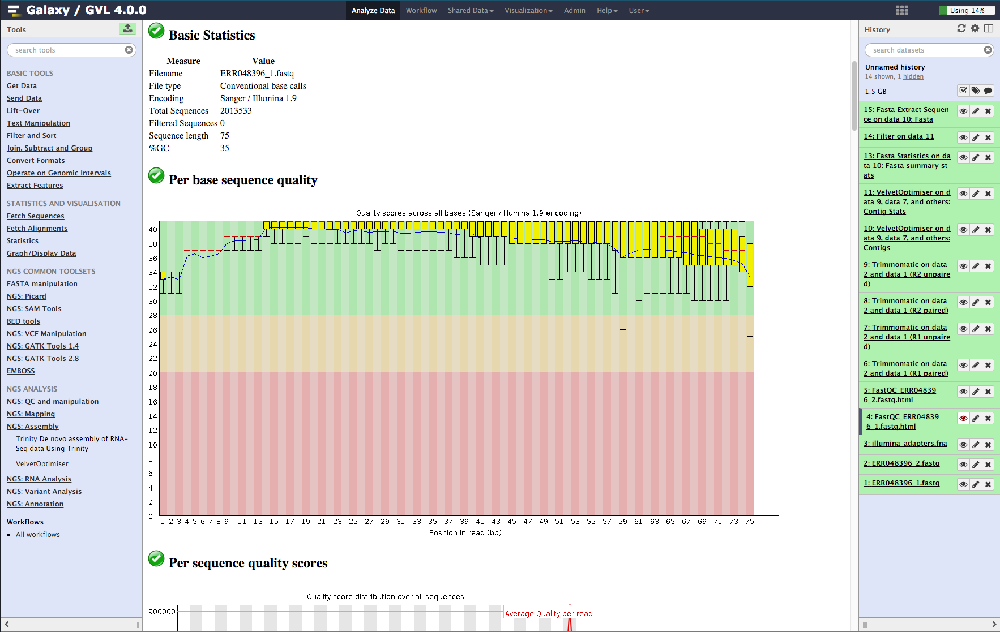
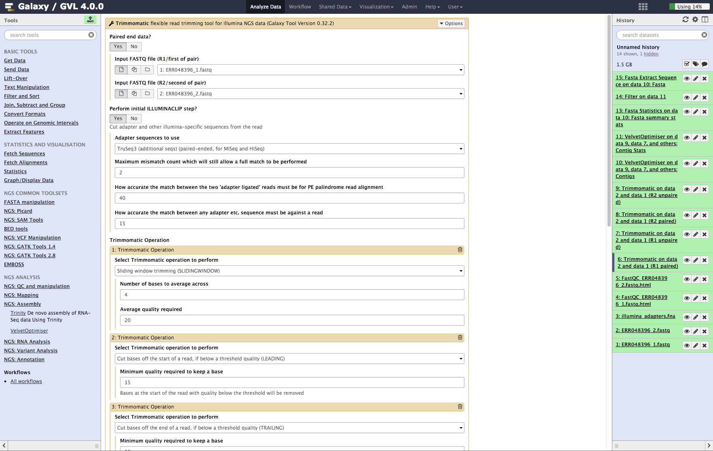
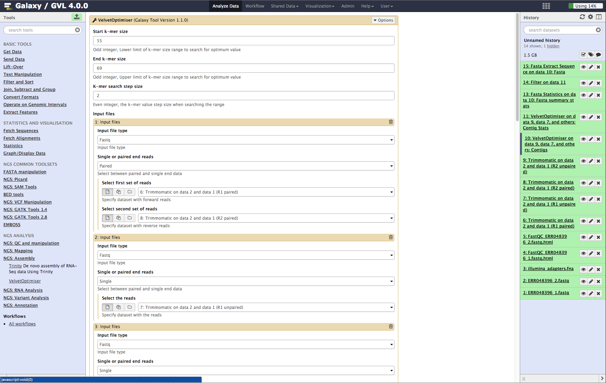
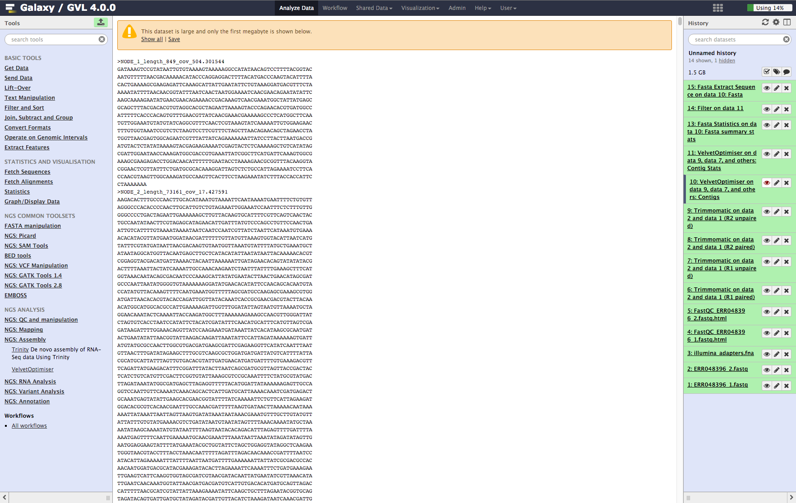
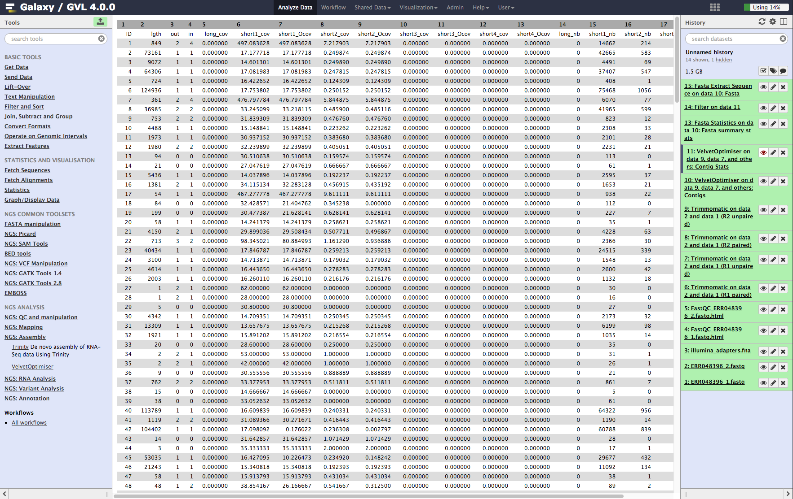
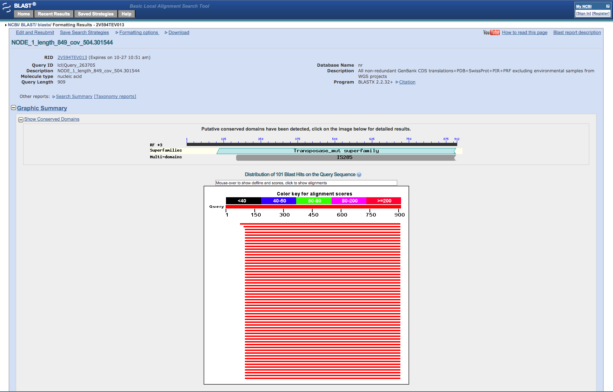

Microbial de novo Assembly for Illumina Data¶
Introductory Tutorial¶
Written and maintained by Simon Gladman - Melbourne Bioinformatics (formerly VLSCI)
Tutorial Overview¶
In this tutorial we cover the concepts of Microbial de novo assembly using a very small synthetic dataset from a well studied organism.
What’s not covered
This tutorial covers the basic aspects of microbial de novo assembly from Illumina paired end or single end reads. It does not cover more complicated aspects of assembly such as:
- Incorporation of other raw data types (454 reads, Sanger reads)
- Gap filling techniques for “finishing” an assembly
- Measuring the accuracy of assemblies
Background¶
Read the background to the workshop here
Where is the data in this tutorial from?
The data for this tutorial is from a whole genome sequencing experiment of a multi-drug resistant strain of the bacterium Staphylococcus aureus. The DNA was sequenced using an Illumina GAII sequencing machine. The data we are going to use consists of about 4 million x 75 base-pair, paired end reads (two FASTQ read files, one for each end of a DNA fragment.) The data was downloaded from the NCBI Short Read Archive (SRA) (http://www.ncbi.nlm.nih.gov/sra/). The specific sample is a public dataset published in April 2012 with SRA accession number ERR048396.
We will also use a FASTA file containing the sequences of the Illumina adapters used in the sequencing process. It is desirable to remove these as they are artificial sequences and not part of the bacterium that was sequenced.
We will use software called Velvet (Zerbino et al 2008) for the main de novo assembly, as well as some other peripheral software for pre- and post-processing of the data. Details of these can be found in the background document linked above.
The protocol:
We are performing a de novo assembly of the read data into contigs and then into scaffolds (appropriately positioned contigs loosely linked together). We firstly need to check the quality of the input data as this will help us choose the most appropriate range of input parameters for the assembly and will guide us on an appropriate quality trimming/cleanup strategy. We will then use an iterative method to assemble the reads using the Velvet Optimiser (a program that performs lots of Velvet assemblies searching for an optimum outcome.) Once this is complete we will obtain summary statistics on the final results (contigs) of the assembly.
Follow this link for an overview of the protocol
The protocol in a nutshell:
Input: Raw reads from sequencer run on microbial DNA sample.
Output: File of assembled scaffolds/contigs and associated information.
Preparation¶
Login to Galaxy¶
- Open a browser and go to a Galaxy server. (what is Galaxy?)
- You can use a galaxy server of your own or
- Galaxy Tute at genome.edu.au
- Register as a new user if you don’t already have an account on that particular server
NOTE: Firefox/Safari/Chrome all work well, Internet Explorer not so well.
Import the DNA read data for the tutorial.¶
You can do this in a few ways. If you’re using galaxy-tut.genome.edu.au:
- Go to Shared Data -> Published Histories and click on “Microbial_assembly_input_data”. Then click ‘Import History’ at top right, wait for the history to be imported to your account, and then ‘start using this history’.
- This will create a new Galaxy history in your account with all of the required data files.
- Proceed to step 4.
If you are using a different Galaxy server, you can upload the data directly to Galaxy using the file URLs.
- On the Galaxy tools panel, click on Get data -> Upload File.
- Click on the Paste/Fetch Data button.
- Paste the URL: https://swift.rc.nectar.org.au:8888/v1/AUTH_377/public/Assembly/ERR048396_1.fastq.gz into the text box. Change the type to fastqsanger (Not fastqcsanger).
- Click on the Paste/Fetch Data button again.
- Paste the URL: https://swift.rc.nectar.org.au:8888/v1/AUTH_377/public/Assembly/ERR048396_2.fastq.gz into the text box and change it’s type to fastqsanger as well.
- Repeat the process for the last URL: https://swift.rc.nectar.org.au:8888/v1/AUTH_377/public/Assembly/illumina_adapters.fna , but make it’s type fasta
- Click on the Start button. Once all of the uploads are at 100%, click on the Close button.
- When the files have finished uploading, rename them to ‘ERR048396_1.fastq’, ‘ERR048396_2.fastq’ and ‘illumina_adapters.fna’ respectively by clicking on the
 icon to the top right of the file name in the right hand Galaxy panel (the history panel)
icon to the top right of the file name in the right hand Galaxy panel (the history panel)
You should now have the following files in your Galaxy history:
- ERR048396_1.fastq - forward reads in fastq format
- ERR048396_2.fastq - reverse reads in fastq format
- illumina_adapters.fa - Illumina adapter sequences in fasta format
View the fastq files¶
Click on the  icon to the top right of each fastq file to view the first part of the file
If you’re not familiar with the FASTQ format, click here for an overview
icon to the top right of each fastq file to view the first part of the file
If you’re not familiar with the FASTQ format, click here for an overview
NOTE: If you log out of Galaxy and log back in at a later time your data and results from previous experiments will be available in the right panel of your screen called the ‘History.’
Section 1: Quality control¶
The basic process here is to collect statistics about the quality of the reads in the sample FASTQ readsets. We will then evaluate their quality and choose an appropriate regime for quality filtering using Trimmomatic (a fastq read quality trimmer.)
More detailed description of FastQC quality analysis can be found here.
More detailed description of Trimmomatic read quality filtering can be found here.
Run FastQC on both input read files¶
- From the tools menu in the left hand panel of Galaxy, select NGS QC and manipulation > FastQC: Comprehensive QC (down the bottom of this category) and run with these parameters:
- “FASTQ reads”: ERR048396_1.fastq
- Use default for other fields
- Click Execute
- Now repeat the above process on the second read file: ERR048396_2.fastq
It is important to do both read files as the quality can be very different between them.
Figure 1: Screenshot of FastQC interface in Galaxy¶

Examine the FastQC output¶
You should have two output objects from the first step:
- FastQC_ERR048396_1.fastqc.html
- FastQC_ERR048396_2.fastqc.html
These are a html outputs which show the results of all of the tests FastQC performed on the read files.
- Click on the
 icon of each of these objects in turn to see the FastQC output.
icon of each of these objects in turn to see the FastQC output.
The main parts of the output to evaluate are:
- Basic statistics. This section tells us that the ASCII quality encoding format used was Sanger/Illumina 1.9 and the reads are length 75 and the percent GC content of the entire file is 35%.
- Per base sequence quality. In the plot you should see that most of the early bases are up around the ‘32’ mark and then increase to 38-40, which is very high quality; The spread of quality values for the last few bases increases and some of the outliers have quality scores of less than 30. This is a very good quality dataset. 20 is often used as a cutoff for reliable quality.
Figure 2: Screenshot of FastQC output in Galaxy¶

Quality trim the reads using Trimmomatic.¶
-
From the tools menu in the left hand panel of Galaxy, select NGS QC and manipulation > Trimmomatic and run with these parameters (only the non-default selections are listed here):
- “Input FASTQ file (R1/first of pair)”: ERR048396_1.fastq
- “Input FASTQ file (R2/second of pair)”: ERR048396_2.fastq
- “Perform initial ILLUMINACLIP step?”: Yes
- “Adapter sequences to use”: TruSeq3 (additional seqs) (paired end, for MiSeq and HiSeq)
- “How accurate … read alignment”: 40
- “How accurate … against a read”: 15
- We will use the default settings for the SLIDING_WINDOW operation but we need to add a few more Trimmomatic operations.
- Click Insert Trimmomatic Operation
- Add Cut bases … (LEADING)
- “Minimum quality required to keep a base”: 15
- Repeat the Insert Trimmomatic Operation for:
- Trim trailing bases, minimum quality: 15
- Minimum length read: 35
-
Click Execute
Figure 3: Screenshot of Trimmomatic inputs in Galaxy¶

Examine the Trimmomatic output FastQ files.¶
You should have 4 new objects in your history from the output of Trimmomatic:
- Trimmomatic on data 2 and data 1 (R1 Paired)
- Trimmomatic on data 2 and data 1 (R1 Unpaired)
- Trimmomatic on data 2 and data 1 (R2 Paired)
- Trimmomatic on data 2 and data 1 (R2 Unpaired)
Click on the  on one of the objects to look at its contents. You’ll notice that not all of the reads are the same length now, as they have had the illumina adapters cut out of them and they’ve been quality trimmed.
on one of the objects to look at its contents. You’ll notice that not all of the reads are the same length now, as they have had the illumina adapters cut out of them and they’ve been quality trimmed.
Section 2: Assemble reads into contigs with Velvet and the Velvet Optimiser¶
The aim here is to assemble the trimmed reads into contigs/scaffolds using Velvet and the Velvet Optimiser.
We will use a single tool, Velvet Optimiser, which takes the trimmed reads from Trimmomatic and performs numerous Velvet assemblies to find the best one. We need to add the reads in two separate libraries. One for the still paired reads and the other for the singleton reads orphaned from their pairs by the trimming process.
Click here for a more detailed explanation of Velvet assemblies and the Velvet Optimiser
De novo assembly of the reads into contigs¶
- From the tools menu in the left hand panel of Galaxy, select NGS: Assembly -> Velvet Optimiser and run with these parameters (only the non-default selections are listed here):
- “Start k-mer value”: 55
- “End k-mer value”: 69
- In the input files section:
- “Select first set of reads”: Trimmomatic on data 2 and data 1 (R1 paired)
- “Select second set of reads”: Trimmomatic on data 2 and data 1 (R2 paired)
- Click the Insert Input Files button and add the following:
- “Single or paired end reads”: Single
- “Select the reads”: Trimmomatic on data 2 and data 1 (R1 unpaired)
- Repeat the above process to add the other unpaired read set Trimmomatic on data 2 and data 1 (R2 unpaired) as well.
- Click Execute.
Figure 4: Screenshot of Velvet Optimiser inputs in Galaxy¶

Examine assembly output¶
Once step 1 is complete, you should now have 2 new objects in your history: * VelvetOptimiser on data 9, data 7, and others: Contigs * VelvetOptimiser on data 9, data 7, and others: Contig Stats
Click on the  icon of the various objects.
icon of the various objects.
-
Contigs: You’ll see the first MB of the file. Note that the contigs are named NODE_XX_length_XXXX_cov_XXX.XXX. This information tells you how long (in k-mer length) each contig is and what it’s average k-mer coverage is. (See detailed explanation of Velvet and Velvet Optimiser for explanation of k-mer coverage and k-mer length.)
-
Contig stats: This shows a table of the contigs and their k-mer coverages and which read library contributed to the coverage. It is interesting to note that some of them have much higher coverage than the average. These are most likely to be repeated contigs. (Things like ribosomal RNA and IS elements.)
Figure 5: Screenshot of assembled contigs (a) and contig stats (b)¶
a¶

b¶

Calculate some statistics on the assembled contigs¶
- From the tools menu in the left hand panel of Galaxy, select FASTA Manipulation -> Fasta Statistics and run with these parameters:
- “Fasta or multifasta file”: Velvet Optimiser … Contigs
- Click Execute
- Examine the Fasta Stats output
You should now have one more object in your history: Fasta Statistics on data 10: Fasta summary stats
Click on the  icon next to this object and have a look at the output. You’ll see a statistical summary of the contigs including various length stats, the % GC content, the n50 as well as the number of contigs and the number of N bases contained in them.
icon next to this object and have a look at the output. You’ll see a statistical summary of the contigs including various length stats, the % GC content, the n50 as well as the number of contigs and the number of N bases contained in them.
Section 3: Extension.¶
Examine the contig coverage depth and blast a high coverage contig against a protein database.
Examine the contig coverage depth.¶
Look at the Contig Stats data (Velvet Optimiser vlsci on data 8, data 9, and data 7: Contig stats) by clicking on the  icon. Note that column 2 contig length (lgth), shows a number of very short contigs (some are length 1).
icon. Note that column 2 contig length (lgth), shows a number of very short contigs (some are length 1).
- We can easily filter out these short contigs from this information list by using the Filter and Sort -> Filter tool.
- Set the following:
- “Filter”: Velvet Optimiser on data 8, data 7 and others: Contig stats
- “With the following condition”: c2 > 100
- Click Execute
The new data object in the history is called: Filter on data 11.
Click on its  icon to view it. Look through the list taking note of the coverages. Note that the average of the coverages (column 6) seems to be somewhere between 16 and 32. There are a lot of contigs with coverage 16. We could say that these contigs only appear once in the genome of the bacteria. Therefore, contigs with double this coverage would appear twice. Note that some of the coverages are >400! These contigs will appear in the genome more than 20 times!
icon to view it. Look through the list taking note of the coverages. Note that the average of the coverages (column 6) seems to be somewhere between 16 and 32. There are a lot of contigs with coverage 16. We could say that these contigs only appear once in the genome of the bacteria. Therefore, contigs with double this coverage would appear twice. Note that some of the coverages are >400! These contigs will appear in the genome more than 20 times!
Lets have a look at one of these contigs and see if we can find out what it is.
Extract a single sequence from the contigs file.¶
Note the contig number (column 1 in the Contig stats file) of a contig with a coverage of over 300. There should be a few of them. We need to extract the fasta sequence of this contig from the contigs multifasta so we can see it more easily.
To do this we will use the tool:
- Fasta manipulation -> Fasta Extract Sequence
- Set the following:
- “Fasta or multifasta file”: Velvet Optimiser … : Contigs
- “Sequence ID (or partial): NODE_1_… (for example)
- Click Execute
The new data object in the history is called: Fasta Extract Sequence on data 10: Fasta.
Click on its  icon to view it. It is a single sequence in fasta format.
icon to view it. It is a single sequence in fasta format.
Blast sequence to determine what it contains.¶
We want to find out what this contig is or what kind of coding sequence (if any) it contains. So we will blast the sequence using the NCBI blast website. (External to Galaxy). To do this:
- Bring up the sequence of the contig into the main window of the browser by clicking on the icon if it isn’t already.
- Select the entire sequence by clicking and dragging with the mouse or by pressing ctrl-a in the browser.
- Copy the selected sequence to the clipboard.
- Open a new tab of your browser and point it to: http://blast.ncbi.nlm.nih.gov/Blast.cgi
- Under the BASIC BLAST section, click “blastx”.
- Paste the sequence into the large text box labelled: Enter Accession number(s), gi(s) or FASTA sequence(s).
- Change the Genetic code to: Bacteria and Archaea (11)
- Click the button labelled: BLAST
After a while the website will present a report of the blast run. Note that the sequence we blasted (if you chose NODE_1) is identical to part of a transposase gene (IS256) from a similar Staphylococcus aureus bacteria. These transposases occur frequently as repeats in bacterial genomes and so we shouldn’t be surprised at its very high coverage.
Figure 6: Screenshot of the output from the NCBI Blast website¶
